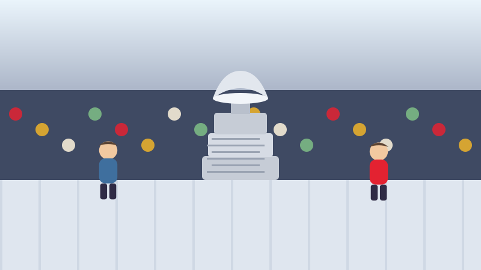

🏒 Pour les enfants
La Coupe où tout le monde a son nom
Elle a commencé comme un bol à punch en argent, et elle est tombée dans un canal, a été oubliée sur un banc de neige et lancée dans une piscine.

Un gouverneur général achète un bol
En 1892, l'homme qui représentait la reine au Canada s'appelait lord Stanley. Il avait assisté à une partie de hockey à Montréal, et toute sa famille était tombée amoureuse de ce sport.
Il a décidé que le Canada avait besoin d'un prix pour sa meilleure équipe de hockey. Il a donc acheté un bol en argent, du genre qu'on remplit de punch aux fruits dans une fête. Il a coûté environ cinquante dollars.
La première équipe l'a remporté en 1893. Personne ne se doutait que, plus de cent trente ans plus tard, ce serait encore le prix dont rêve chaque joueur de hockey du monde.
C'est le plus vieux trophée que se disputent les athlètes professionnels en Amérique du Nord. Plus vieux que toutes les autres coupes et médailles de tous les autres sports d'ici.
Le nom de chacun y est gravé
La plupart des trophées indiquent seulement qui a gagné. La Coupe Stanley fait autre chose : le nom de chaque joueur de l'équipe gagnante est gravé dans l'argent.
Environ 2 600 personnes y sont maintenant gravées. Les entraîneurs, les soigneurs et les personnes qui s'occupent de l'équipement y figurent aussi.
La Coupe grandirait chaque année si on ne faisait rien : quand un anneau d'argent est rempli, on le retire et on le conserve au Temple de la renommée du hockey à Toronto, puis on ajoute un nouvel anneau vide en bas.
Si un nom est mal orthographié, il reste ainsi. Il y a sur la Coupe des fautes d'orthographe qui datent de plusieurs décennies, et personne ne les efface.
Une journée entière chacun
Voici le plus beau. Chaque personne de l'équipe gagnante reçoit la vraie Coupe Stanley pendant une journée entière, pour en faire presque tout ce qu'elle veut.
Les joueurs l'emportent chez eux, dans la ville où ils ont grandi. Elle est allée dans de minuscules villages, dans des fermes, dans des hôpitaux et dans des écoles. Un homme qu'on appelle le gardien de la Coupe voyage avec elle et ne la lâche presque jamais.
Cette tradition est plus récente qu'on pourrait le croire. Les équipes ont toujours fêté avec elle, mais donner à chacun sa propre journée a commencé en 1995.
Ce qui lui est arrivé
Comme ce sont de vraies personnes qui la transportent, la Coupe a eu une vie mouvementée.
En 1905, des joueurs qui faisaient la fête à Ottawa l'ont envoyée d'un coup de pied sur le canal Rideau gelé. Ils sont revenus la chercher le lendemain et elle était encore là, posée sur la glace.
En 1924, la voiture qui l'emmenait à une fête a crevé un pneu. Tout le monde est sorti pour changer la roue, puis on est reparti en laissant la Coupe sur un banc de neige.
Elle est aussi tombée dans des piscines plus d'une fois, ce qui a appris à tout le monde une chose utile : la Coupe Stanley ne flotte pas.
Des mots à connaître
- Trophée
- Un prix que l'on gagne et que l'on remet l'année suivante, au lieu de le garder.
- Gravé
- Des lettres taillées dans le métal avec un outil pointu, qui ne s'effacent jamais.
- Gouverneur général
- La personne qui représente le roi ou la reine ici, au Canada.
Essaie maintenant trois questions
Pas de chronomètre et aucune note à craindre. Chaque réponse t'explique pourquoi.
À propos de ce quiz
Cette histoire raconte d'où vient la Coupe Stanley, pourquoi le nom de chaque gagnant y est gravé, pourquoi chaque joueur l'a pendant une journée entière, et quelques-uns des endroits étranges où elle a abouti.
Elle est écrite en phrases courtes pour les enfants de six à neuf ans, avec une image dessinée pour ce site et trois questions à la fin. Touchez le bouton de lecture à voix haute et la page lira les questions à haute voix.